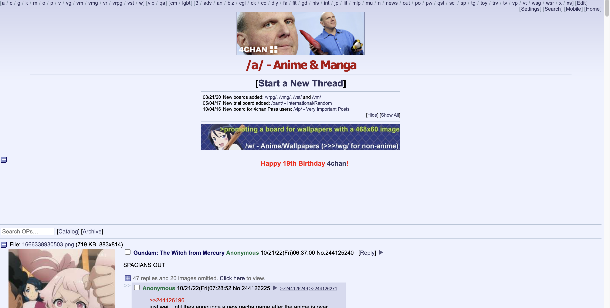
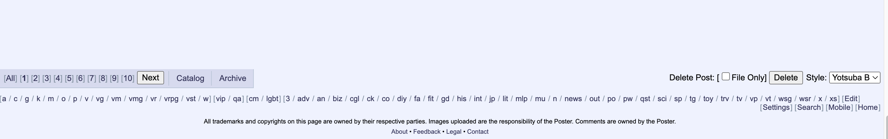
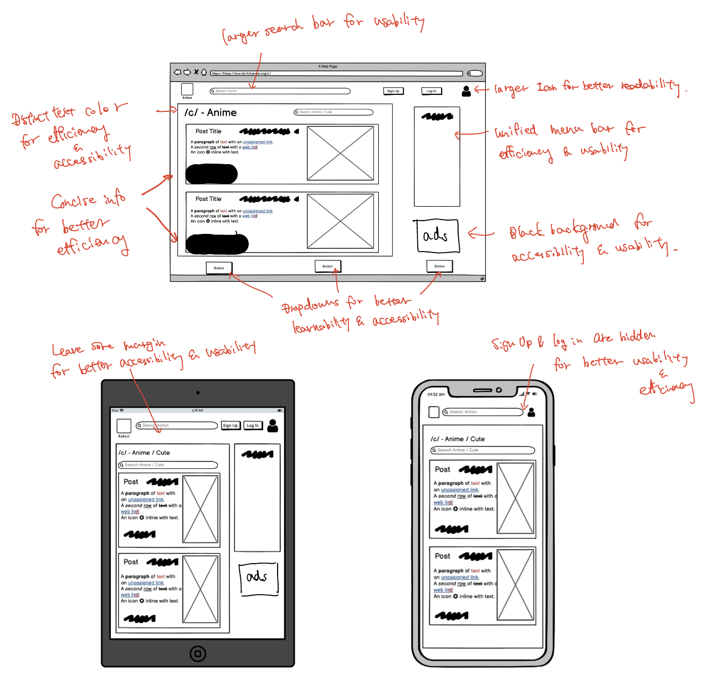
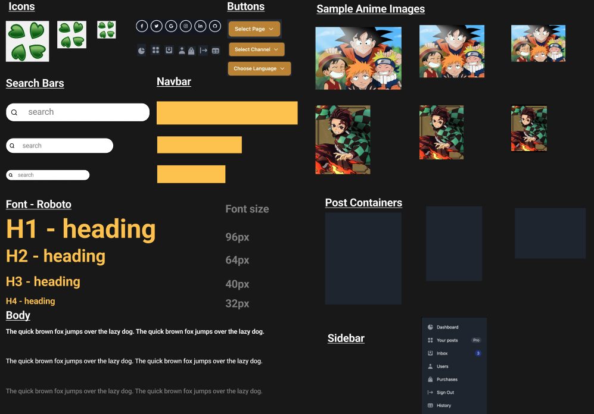
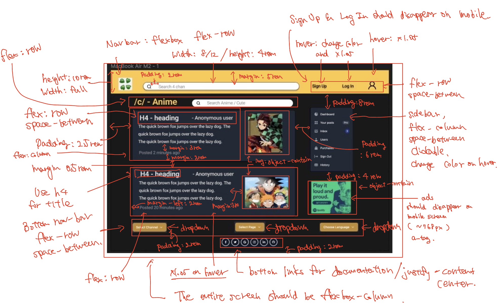
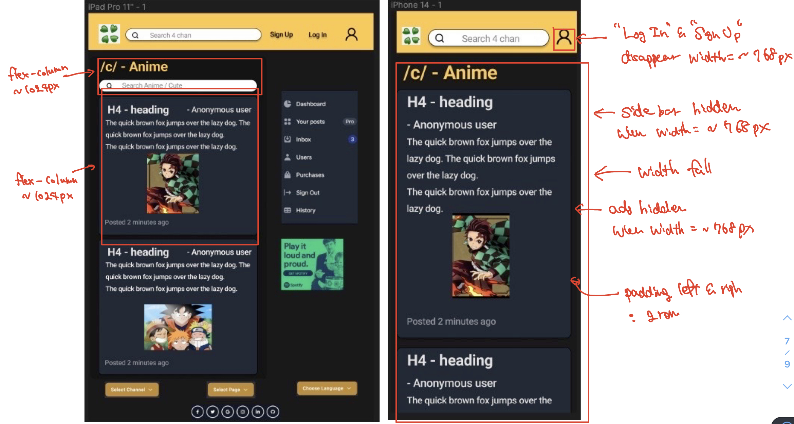

👋 Hi there!! This assignment is for me to practice the workflow of
redesigning a simple website. The objective is to learn the skills
necessaryt to analyze and identify flaws in an existing interface by
making , create low-fidelity and high-fidelity prototypes for
various screen sizes, and build a responsive website based on those
prototypes.
Part 1: Identifying Usability Problems
In this part, I picked one page of
4 chan
to analyze based on usability and accessibility standards. Below is
the screnshot of the chosen webpage!


As you can see, even at a first glance, this webpage does not
necessarily have the best design for usability and accessibility.
Some of the most common issues I identified are
-
(1) The navigation at the top of the page seems to have a very
small amount of spaces in between & paddings. This makes it
extremely difficult for the users to navigate through different
pages. This design in particular is devoid of efficiency of user
because switching channels should be relatively an easy task for
every user. Specifically, the webpage should speed up the process
of interaction between the user and the interface by making it
simpler and more recognizable.
-
(2) Some texts in the page have similar colors as the backgrond
color. (e.g. the "/a/ - Anime & Manga" is in red and the
background is in pink.) This makes it harder for users to read
texts and potentially slows down the process of user-interface
interaction. This is alo not a great design as it makes the UX
inefficient.
-
(3) Overall, the page is not designed in minimalistic manner.
Although sometimes more means better, I thought the original page
could provide better user experience by improving on its
simplicity.Ò In particular, the long list of top navigation bar
could be collapsed to a single dropdown and provide less
information for each posts.
-
(4) Since this page provides a lot of information that most users
don't care, (such as post identifier number and many buttons with
beginner unfriendly codes at the top), it is hard for first-time
users to learn/remember how to use the UI quickly. From the
learnability and memorability points of view, I thought this page
could be improved as well.
-
(5) The navigation bar at the bottom is also hard to see; first
time users are likely to have difficulty understanding what each
word represents without description. This is also not a good
design based on learnability and memorability. I thoguht the UX
with this UI could be improved by replacing it with larger
dropdowns.
-
(6) There are no links to documentations or help int this page.
Even though it is better if the system can be used without
documentation, it may be necessary to provide help and
documentation. Any such information should be easy to search,
focused on the user's task, list concrete steps to be carried out,
and not be too large.
-
(7) Since there is no hover effect on each post in this page, it
could be challenging for some users to navigate/stay informed
about which post there are currently checking out or about to
click on. With additional features of hover effects, the page can
improve its efficiency and usability.
-
(8) Overall, the page is not designed in minimalistic manner.
Although sometimes more means better, I thought the original page
could provide better user experience by improving on its
simplicity.Ò In particular, the long list of top navigation bar
could be collapsed to a single dropdown and provide less
information for each posts.
In addition to analyzing the website on usability, I used
WebAIM WAVE
to figure out poissible accesibility problems related to the page I
chose. One thing that came to my attention is the frequency of "very
low contrast" error. In total, there were 237 contrast errors and
thus I thought I needed to redesign the website in a way such that
every character has high contrast colors from the background color.
Another issue related to user accesibility is that images in the
page did not describe the actual contents of the page, but the size
of the image. While this could be beneficial from the developers'
points of view, some users, especially those who use screen readers
or such applications, might have hard time understanding what a
specific image is about
Part 2: Visual Redesign
Based on the problems I identified in Part 1 and the page I chose, I
created low-fidelity wireframes, a visual design style guide, and
high-fidelty prototypes. Here are the screenshots of those.

Low-fidelity prototypes with annotations. (Used Balsamiq.)

Visual design guide made with Figma.


High-fidelity prototypes with annotations created with Figma.
Part 3: Responsive Redesign
Using the final high-fidelity prototypes, I created the page using HTML and CSS (TailwindCSS). Check out
redesigned page
to see my version (= better version) of the page that I chose.
Here are the screenshots of the
redesigned page
!! 👇
Screenshots of my deployed page in different screen sizes.
Thank you for checking out my project!!👋 Hope you have a good day!!